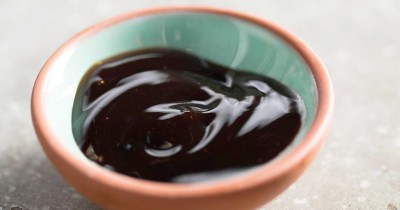

Китайский устричный соус

Ингредиенты
- Соевый соус - 40 мл
- Устричный соус - 20 мл
- Коричневый сахар - 5 гр
Рецепт приготовления
- Основу китайского устричного соуса составляет собственно сам устричный соус. Это жидкая приправа густой консистенции, которая продается в стеклянных бутылках. Соус имеет пикантный и слегка солоноватый вкус устриц. Производят его из настоящих устриц с добавлением воды, сахара и крахмала. Появившись в Китае более ста лет назад, устричный соус стал практически неотъемлемой частью китайской народной кухни. В применении устричного соуса в кулинарии есть особенность - он используется в рецептах с минимальным количеством ингредиентов, иначе его вкус теряется среди многообразия других продуктов.
- Китайский устричный соус подают к салатам и гарнирам - классическому жареному рису, рисовой лапше со свининой, курице в устричном соусе с орехами, пряному рису с креветками, различным супам, жареным овощам, омлету и многим другим блюдам. Такой соус отлично сочетается с мясом, птицей, рыбой и морепродуктами, различными крупами и овощами. Он сочетается практически со всеми блюдами, имеющими соленый вкус.
- Кроме того, китайский устричный соус очень полезен, благодаря присутствию в нем белков, аминокислот, кальция, калия, цинка, натрия и железа. Такой полноценный комплекс витаминов и минералов благотворно сказывается на организме человека, повышает его работоспособность, придает силы.
- Готовить китайский устричный соус очень легко и быстро. Понадобится небольшая миска для смешивания продуктов. В неё необходимо вылить готовый устричный соус. В миску к устричному соусу добавить соевый и с помощью кухонного венчика хорошенько всё перемешать, чтобы два соуса соединились вместе. Вместо устричного соуса можно взять жидкость из-под консервированных устриц, но при этом сами устрицы не понадобятся. Соевый соус в данном этапе можно заменить на соус терияки.
- После того, как соусы смешались, добавить в миску сахар и взбивать венчиком до тех пор, пока сахар полностью не растворится. Попробовать получившийся соус и отрегулировать его вкус, добавив в него немного устричного соуса, щепотку сахара или соевого соуса. Соевый соус рекомендуется добавлять по чуть-чуть, чтобы не пересолить готовое блюдо.
- Готовый китайский устричный соус можно хранить в герметичной емкости в холодильнике до 7 дней. Подавать соус лучше всего к блюдам из мяса, рыбы и морепродуктов, чтобы еще больше усилить вкус этих продуктов. Приятного аппетита!
Вернуться к списку блюд